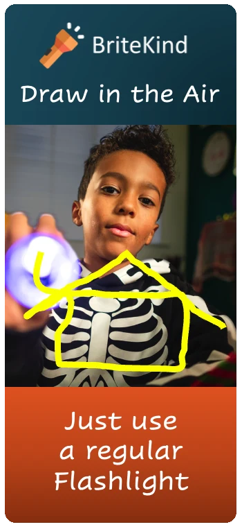
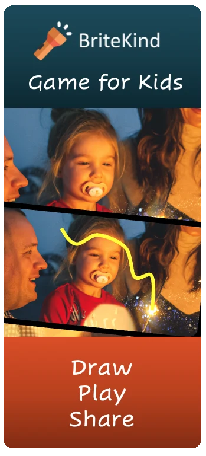
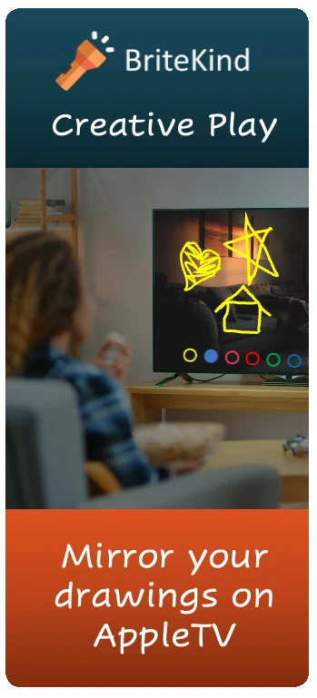
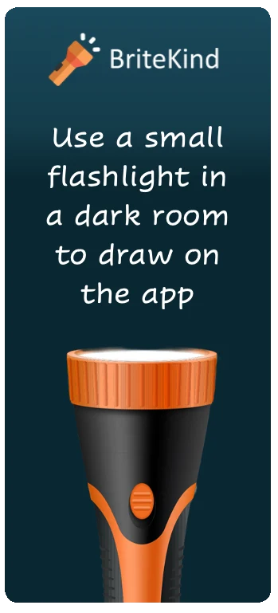

App Store optimization for a kids app: the BriteKind screenshots
Parents decide on a kids app in a few seconds on the product page, and most of that decision comes from the first screenshots. Here is BriteKind's promo set, what each frame does and what we would test next.
What do BriteKind's App Store screenshots say?
The set has four frames in one consistent template: the BriteKind logo on dark teal, a short headline, a real-life photo with the drawn line on top, and a caption on an orange band. Each frame makes one claim, which is the right discipline for a store listing that parents scan quickly.




| Frame | What works | What we would test |
|---|---|---|
| 1. Draw in the Air | Shows the magic in one image; the caption removes the fear of extra hardware | Keep as frame 1 |
| 2. Game for Kids | Shows a family, which speaks to the parent who buys | A more specific headline, such as an age range |
| 3. Creative Play | The TV mode is a strong differentiator | Name Apple TV in the headline, not only the caption |
| 4. Flashlight in a dark room | Sets the right expectation and prevents bad reviews | Move earlier, or add the dark room to frame 1 |
Why does the dark-room requirement belong near the top?
An app that needs a flashlight and a dim room will get one-star reviews from parents who try it in a bright kitchen. Frame 4 already says this clearly; the risk is that many parents never swipe that far. Putting the requirement into the first or second frame trades a little curiosity for fewer disappointed installs, which usually improves ratings and, over time, conversion.
What sizes and formats does Apple require?
Apple publishes exact screenshot specifications for each device size, and BriteKind needs an iPad set as well as an iPhone set, because the iPad is the natural device for this game. An app preview video is worth making here: light painting is a motion product, and a short clip explains it better than any still.
The title and subtitle carry most of the search weight on the App Store, so spend more time on those two lines than on the description. Apple's guide to creating your product page covers what each field does and how it appears in search.
How should BriteKind test its store listing?
Apple's product page optimization lets you test alternate icons, screenshots and preview videos against the original with real store traffic. For BriteKind, the first test we would run is frame order: the current set against a version with the dark-room instruction in frame 2.
The promo photos also suggest a seasonal angle. The source images include a Halloween costume and a holiday party, and both are moments when families are at home in the evening with the lights low. Seasonal screenshot sets and promotional text timed to those weeks are a low-cost test.
Our guide on App Store screenshots for mobile apps covers layout patterns, caption length and how to plan a test sequence.
Sell the moment, then state the requirement.
The first frame should make a parent smile. The next one should tell them exactly what they need, so the people who install are the people who will love it.